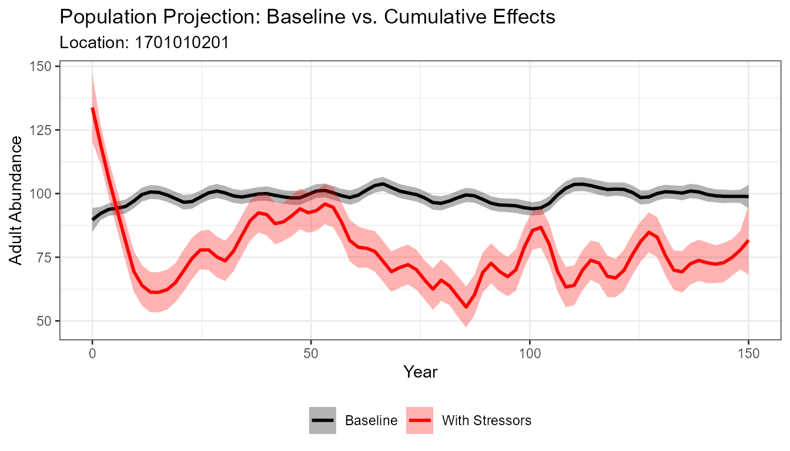
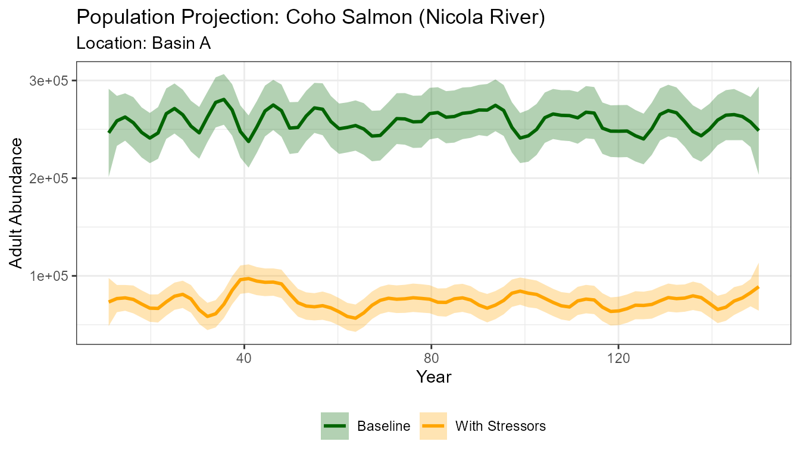
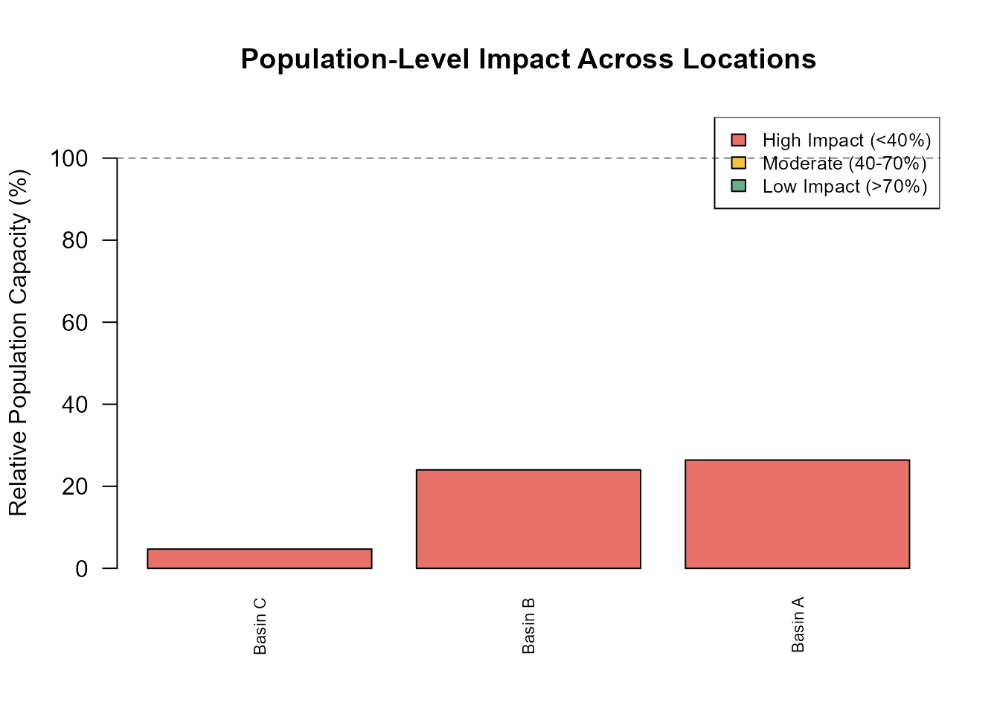

4. Population Model Batch Run
2026-04-22
Source:vignettes/a04-population-model-batch-run.Rmd
a04-population-model-batch-run.RmdOverview
This tutorial demonstrates how to run the CEMPRA population model in batch mode — looping across multiple spatial units (e.g., reaches, watersheds or habitat units) and comparing results. Batch processing is essential when working with real-world datasets that span many locations, because it allows you to efficiently generate population projections for every spatial unit in your study area and identify which locations are most affected by cumulative stressors.
The PopulationModel_Run() function runs the population
model for a single spatial unit at a time. To process all locations, we
wrap this function in a loop. This design is intentional — it gives you
the flexibility to adjust parameters (e.g., species profile, stressor
subsets, habitat capacities) on a per-location basis if needed.
Prerequisites
Before starting this tutorial, you should:
- Complete Tutorial 2: Joe Model Batch Run to understand batch processing concepts and the scenarios file format
- Complete Tutorial 3: Population
Model Overview to understand life cycle profiles, density
dependence, and the
PopulationModel_Run()function - Review the Life Cycle Model chapter of the CEMPRA Guidance Document for detailed parameter descriptions
Part 1: Single-Location Population Model (Compensation Ratios)
In the first part of this tutorial, we run the population model for a single location using the default density-dependence method (compensation ratios). This serves as a starting point before scaling up to batch processing across multiple locations.
Load Input Data
We begin by loading the three core input files. These are the same stressor-response and stressor-magnitude workbooks used in the Joe Model tutorials, plus a life cycle profile CSV that defines the species’ vital rates. See the Data Inputs chapter of the guidance document for details on preparing these files for your own study system.
library(CEMPRA)
library(ggplot2)
# Load the stressor-response workbook
filename_sr <- system.file("extdata", "stressor_response_fixed_ARTR.xlsx", package = "CEMPRA")
sr_wb_dat <- StressorResponseWorkbook(filename = filename_sr)
# Load the stressor-magnitude workbook
filename_rm <- system.file("extdata", "stressor_magnitude_unc_ARTR.xlsx", package = "CEMPRA")
dose <- StressorMagnitudeWorkbook(filename = filename_rm, scenario_worksheet = "natural_unc")
# Load the life cycle parameters
filename_lc <- system.file("extdata", "life_cycles.csv", package = "CEMPRA")
life_cycle_params <- read.csv(filename_lc)Choose a Target Spatial Unit
The PopulationModel_Run() function processes one spatial
unit (HUC) at a time. Each HUC_ID in the stressor-magnitude file
corresponds to a location with its own set of stressor values. Here we
select a single location to demonstrate the workflow before scaling
up.
# Choose target ID
# In this example just use the first watershed
HUC_ID <- dose$HUC_ID[1]Run the Population Model
We run the population model with PopulationModel_Run(),
which internally:
- Runs the Joe Model to calculate system capacity scores for the target location
- Links stressor effects to life-stage-specific vital rates (survival, fecundity, or capacity)
- Projects the population forward in time with and without cumulative effect stressors
- Repeats the projection across multiple Monte Carlo simulations
(
MC_sims) to capture stochastic variability
The model always produces two sets of projections: a “baseline” run (no stressor effects) and a “ce” run (with cumulative effect stressors applied). This paired design ensures that comparisons are always made relative to a reference condition.
We set output_type = "adults" to return a clean data
frame of adult abundance over time. The alternative,
output_type = "full", returns a nested list with
stage-specific abundances and projection matrices for each simulation
(see Tutorial 3 for
details).
# Set seed for reproducibility — the population model includes stochastic
# variation in survival and fecundity, so set.seed() ensures results are
# consistent across runs. Remove or change the seed to explore different
# random trajectories.
set.seed(123)
# Run the population model for a single location
data <- PopulationModel_Run(
dose = dose, # Stressor-magnitude data
sr_wb_dat = sr_wb_dat, # Stressor-response workbook
life_cycle_params = life_cycle_params, # Life cycle profile (CSV)
HUC_ID = HUC_ID, # Target spatial unit
n_years = 150, # Projection length (years)
MC_sims = 5, # Number of Monte Carlo simulations
stressors = NA, # Use all stressors (NA = no filter)
output_type = "adults" # Return adult abundance data frame
)
# Review the output structure
# Columns: year, N (adult abundance), MC_sim (simulation ID), group (ce or baseline)
head(data, 3)
#> year N MC_sim group
#> 1 0 148.3361 1 ce
#> 2 1 140.5271 1 ce
#> 3 2 134.5689 1 ce
# Median adult abundance with cumulative effect stressors
median(data$N[which(data$group == "ce")], na.rm = TRUE)
#> [1] 81.16012
# Median adult abundance under baseline (no stressors)
median(data$N[which(data$group == "baseline")], na.rm = TRUE)
#> [1] 98.93521The ratio of CE median to baseline median gives you a quick measure of relative population impact. A ratio near 1.0 means stressors have little effect; values well below 1.0 indicate substantial population-level impact from cumulative stressors.
Visualize the Time Series Projections
Plotting the population trajectories helps you see how the population behaves over time under each scenario. The loess smoother averages across Monte Carlo simulations to show the central trend, while the shaded ribbon shows the range of variability.
ggplot(data, aes(x = year, y = N, color = group)) +
stat_smooth(method = "loess", span = 0.1, se = TRUE,
aes(fill = group), alpha = 0.3) +
scale_color_manual(values = c("baseline" = "black", "ce" = "red"),
labels = c("baseline" = "Baseline", "ce" = "With Stressors")) +
scale_fill_manual(values = c("baseline" = "black", "ce" = "red"),
labels = c("baseline" = "Baseline", "ce" = "With Stressors")) +
labs(x = "Year", y = "Adult Abundance",
title = "Population Projection: Baseline vs. Cumulative Effects",
subtitle = paste("Location:", HUC_ID)) +
theme_bw() +
theme(legend.position = "bottom",
legend.title = element_blank())
#> `geom_smooth()` using formula = 'y ~ x'
Look for the gap between the baseline (black) and CE (red) trajectories — a larger gap indicates a greater population-level impact from cumulative stressors at this location.
Part 2: Using Location-Specific Habitat Capacities (Beverton-Holt)
In Part 1, we used the default density-dependence method — compensation ratios — which back-calculates stage-specific carrying capacities from a single adult K value defined in the life cycle profile. This approach is convenient when habitat capacity data are unavailable, but it assumes a fixed relationship between adult abundance and stage-specific capacities across all locations… it can be quite a bit more challenging to setup a new model with compensation ratios, especially if new users are less familiar with them. We therefore suggest using location-specific habitat capacities.
In practice, habitat capacity often varies dramatically across locations and life stages. For example, one watershed may have abundant fry rearing habitat but limited spawning habitat, while another has the opposite pattern. To capture this, CEMPRA supports location and stage-specific carrying capacities supplied through a habitat capacity file. When provided, the model uses Beverton-Holt or Hockey-Stick density-dependence functions at the specified life stages, replacing the compensation ratio approach for those stages.
This section switches to a Coho salmon dataset from
the Nicola River watershed to demonstrate this workflow. The key
difference from Part 1 is the addition of the habitat_dd_k
argument, which provides a table of K values for each location and life
stage. See the Density-Dependent
Constraints and Location
and Stage-Specific Carrying Capacities sections of the guidance
document for a full description of how K values map to life stages.
Load Coho Salmon Data
We load a completely new set of input files for this example — a
different species (Coho salmon) with its own stressor-response
relationships, stressor magnitudes, and life cycle parameters.
Critically, we also load a habitat capacity file
(habitat_dd_k) that provides location and stage-specific
carrying capacities. The life cycle profile for this species includes
density-dependence flags (e.g., bh_stage_0 = TRUE) that
tell the model which stages should use Beverton-Holt constraints.
# Stressor-response workbook (Coho-specific dose-response curves)
filename_sr <- system.file("extdata", "./species_profiles/stressor_response_coho.xlsx", package = "CEMPRA")
stressor_response <- StressorResponseWorkbook(filename = filename_sr)
# Stressor-magnitude workbook (location-specific stressor values)
filename_rm <- system.file("extdata", "./species_profiles/stressor_magnitude_coho_sites.xlsx", package = "CEMPRA")
stressor_magnitude <- StressorMagnitudeWorkbook(filename = filename_rm)
# Life cycle parameters (Coho vital rates for Nicola River)
filename_lc <- system.file("extdata", "./species_profiles/life_cycles_coho_nicola.csv", package = "CEMPRA")
life_cycle_params <- read.csv(filename_lc)
# Habitat capacity file (location and stage-specific K values)
filename_dd <- system.file("extdata", "./species_profiles/habitat_dd_k_coho_sites.xlsx", package = "CEMPRA")
habitat_dd_k <- readxl::read_excel(filename_dd)Inspect the Habitat Capacity File
The habitat capacity file contains columns for HUC_ID,
NAME, and stage-specific capacity columns (e.g.,
k_stage_0_mean for fry capacity). Each row represents a
different spatial unit. Only include columns for stages where
density-dependent bottlenecks exist — leave cells blank or omit columns
for unconstrained stages.
head(habitat_dd_k)
#> # A tibble: 3 × 11
#> HUC_ID NAME k_stage_0_mean k_stage_1_mean k_stage_2_mean k_stage_3_mean
#> <dbl> <chr> <lgl> <dbl> <lgl> <dbl>
#> 1 1 Basin A NA 10000000 NA 1000
#> 2 2 Basin B NA 10000000 NA 1000
#> 3 3 Basin C NA 10000000 NA 1000
#> # ℹ 5 more variables: k_stage_0_cv <lgl>, k_stage_1_cv <dbl>,
#> # k_stage_2_cv <lgl>, k_stage_3_cv <dbl>, notes <lgl>Run the Population Model with Habitat Capacities
When we pass the habitat_dd_k argument, the model uses
the location-specific carrying capacities from this file instead of
back-calculating them from compensation ratios. The life cycle profile
must include density-dependence flags (e.g.,
bh_stage_0 = TRUE) to indicate which stages use
Beverton-Holt constraints — see Tutorial 3 for details on setting
these flags.
# Run for the first location with habitat capacity overrides
data <- PopulationModel_Run(
dose = stressor_magnitude,
sr_wb_dat = stressor_response,
life_cycle_params = life_cycle_params,
HUC_ID = 1, # First location in the dataset
n_years = 150, # Projection length (years)
MC_sims = 5, # Number of Monte Carlo simulations
output_type = "adults", # Return adult abundance data frame
habitat_dd_k = habitat_dd_k # Stage-specific habitat capacities
)
# Review output
head(data, 3)
#> year N MC_sim group
#> 1 0 1196.784 1 ce
#> 2 1 8677.164 1 ce
#> 3 2 273839.404 1 ce
# Median adult abundance with cumulative effect stressors
median(data$N[which(data$group == "ce")], na.rm = TRUE)
#> [1] 68683.22
# Median adult abundance under baseline (no stressors)
median(data$N[which(data$group == "baseline")], na.rm = TRUE)
#> [1] 246892.9Visualize the Coho Results
# Drop out the burn-in years
data <- data[data$year > 10, ]
ggplot(data, aes(x = year, y = N, color = group)) +
stat_smooth(method = "loess", span = 0.1, se = TRUE,
aes(fill = group), alpha = 0.3) +
scale_color_manual(values = c("baseline" = "darkgreen", "ce" = "orange"),
labels = c("baseline" = "Baseline", "ce" = "With Stressors")) +
scale_fill_manual(values = c("baseline" = "darkgreen", "ce" = "orange"),
labels = c("baseline" = "Baseline", "ce" = "With Stressors")) +
labs(x = "Year", y = "Adult Abundance",
title = "Population Projection: Coho Salmon (Nicola River)",
subtitle = paste("Location:", habitat_dd_k$NAME[1])) +
theme_bw() +
theme(legend.position = "bottom",
legend.title = element_blank())
#> `geom_smooth()` using formula = 'y ~ x'
Part 3: Batch Processing Across Multiple Locations
The real power of batch processing is running the population model across all spatial units in your study area and comparing results. This allows you to identify which locations are most impacted by cumulative stressors and prioritize recovery actions accordingly.
Loop Across All Locations
We loop over every unique HUC_ID in the stressor-magnitude file, run the population model for each, and collect the results into a single data frame. This is the same approach used for the Joe Model batch run in Tutorial 2, but applied to demographic projections.
# Get all unique location IDs from the habitat capacity file
all_hucs <- unique(habitat_dd_k$HUC_ID)
# Pre-allocate a list to store results for each location
batch_results <- list()
for (i in seq_along(all_hucs)) {
huc <- all_hucs[i]
# Run the population model for this location
result <- PopulationModel_Run(
dose = stressor_magnitude,
sr_wb_dat = stressor_response,
life_cycle_params = life_cycle_params,
HUC_ID = huc, # Current location in the loop
n_years = 100,
MC_sims = 3,
output_type = "adults",
habitat_dd_k = habitat_dd_k
)
# Tag each row with the location ID and name for later comparison
result$HUC_ID <- huc
result$location <- habitat_dd_k$NAME[habitat_dd_k$HUC_ID == huc][1]
batch_results[[i]] <- result
}
# Combine all location results into a single data frame
all_data <- do.call(rbind, batch_results)
head(all_data)
#> year N MC_sim group HUC_ID location
#> 1 0 976.688 1 ce 1 Basin A
#> 2 1 8356.582 1 ce 1 Basin A
#> 3 2 194172.271 1 ce 1 Basin A
#> 4 3 5044.839 1 ce 1 Basin A
#> 5 4 13043.724 1 ce 1 Basin A
#> 6 5 131013.850 1 ce 1 Basin ACompare Locations
With batch results in hand, we can calculate the relative population capacity at each location — the ratio of median adult abundance under cumulative effects to the baseline. This metric tells you how much of the baseline population each location can sustain given current stressor conditions.
all_data$location <- ifelse(is.na(all_data$location), 0, all_data$location)
# Median abundance by location and scenario group (ce vs baseline)
location_summary <- aggregate(N ~ location + group, data = all_data,
FUN = median, na.rm = TRUE)
# Extract baseline and CE medians side-by-side
baseline_vals <- location_summary$N[location_summary$group == "baseline"]
ce_vals <- location_summary$N[location_summary$group == "ce"]
locations <- location_summary$location[location_summary$group == "baseline"]
# Build a comparison table with relative capacity (CE / baseline * 100)
comparison <- data.frame(
location = locations,
baseline_N = round(baseline_vals, 0),
ce_N = round(ce_vals, 0),
relative_capacity = round(ce_vals / baseline_vals * 100, 1)
)
# Sort so the most impacted locations appear first
comparison <- comparison[order(comparison$relative_capacity), ]
print(comparison)
#> location baseline_N ce_N relative_capacity
#> 3 Basin C 207596 9799 4.7
#> 2 Basin B 243361 58461 24.0
#> 1 Basin A 263821 69574 26.4Locations with low relative capacity values are the most impacted by cumulative stressors and may be priorities for recovery actions. Locations near 100% are relatively unaffected.
Visualize Batch Results
A bar chart of relative capacity across locations provides a quick visual summary of where stressors have the greatest population-level impact.
# Color bars by impact severity
comparison$color <- ifelse(comparison$relative_capacity < 40, "#E8726A",
ifelse(comparison$relative_capacity < 70, "#F5C242", "#6AB187"))
barplot(comparison$relative_capacity,
names.arg = comparison$location,
col = comparison$color,
las = 2, cex.names = 0.7,
ylab = "Relative Population Capacity (%)",
main = "Population-Level Impact Across Locations",
ylim = c(0, 110))
abline(h = 100, lty = 2, col = "grey50")
legend("topright",
legend = c("High Impact (<40%)", "Moderate (40-70%)", "Low Impact (>70%)"),
fill = c("#E8726A", "#F5C242", "#6AB187"),
cex = 0.8)
Next Steps
| Tutorial | Description |
|---|---|
| 5. Population Model Evaluation | Sensitivity analysis and model evaluation |
For additional guidance, see the CEMPRA Documentation:
- Life Cycle Profiles — detailed parameter descriptions and tips for building custom species profiles
- Density-Dependent Constraints — compensation ratios, Beverton-Holt, and Hockey-Stick options
- Linking Stressors to Vital Rates — configuring the Parameters and Life_stages columns
- Data Inputs — setup and formatting for all input files
- Case Studies — real-world applications of the CEMPRA framework